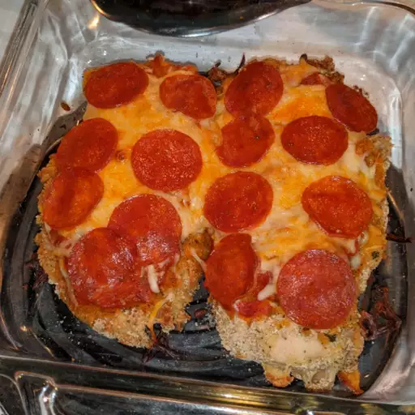

Pizza Chicken

Description
Plain breaded chicken is so boring. Spice it up with a little touch of pizza.
Ingredients
- ½ cup Italian-seasoned bread crumbs
- ¼ cup grated Parmesan cheese
- 1 teaspoon salt
- 1 teaspoon ground black pepper
- ½ cup all-purpose flour
- 1 egg
- 1 tablespoon lemon juice
- 2 skinless, boneless chicken breast halves
- ½ cup pizza sauce, divided
- ½ cup shredded mozzarella cheese, divided
- 4 slices pepperoni, or to taste - divided
Steps
- Preheat oven to 400 degrees F (200 degrees C).
- Combine bread crumbs, Parmesan cheese, salt, and black pepper in a shallow bowl; place flour into a second bowl. Whisk egg and lemon juice together in a third bowl.
- Dip each chicken breast in egg mixture and dredge in flour; dip again in egg mixture and dredge chicken in crumb mixture until coated. Place coated chicken breasts into a baking dish.
- Bake in the preheated oven until chicken is heated through and crumbs are golden, about 20 minutes.
- Spoon 2 tablespoons pizza sauce onto each chicken breast, sprinkle each with half the mozzarella cheese, and top each with half the pepperoni slices.
- Bake until chicken is no longer pink inside and the juices run clear, about 10 more minutes. An instant-read meat thermometer inserted into the thickest part of a breast should read at least 160 degrees F (70 degrees C).